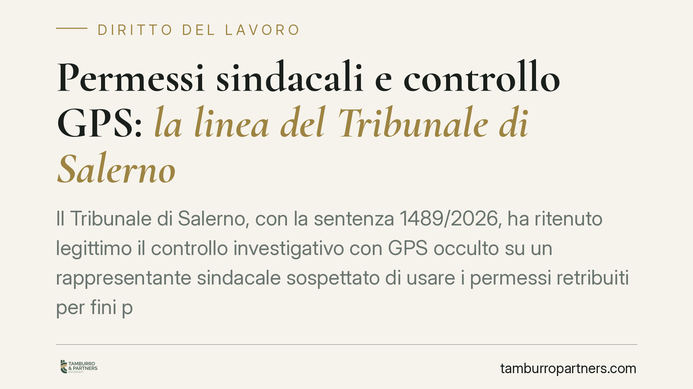

Permessi sindacali e controllo GPS: la linea del Tribunale di Salerno
Il Tribunale di Salerno, con la sentenza 1489/2026, ha ritenuto legittimo il controllo investigativo con GPS occulto su un rappresentante sindacale sospettato di usare i permessi retribuiti per fini privati. Esclusa la natura antisindacale del licenziamento per giusta causa. La decisione tocca il delicato equilibrio tra tutela dell'attività sindacale e diritto del datore di verificare l'uso corretto dei permessi.

Il caso
Un rappresentante sindacale aziendale fruiva con regolarità dei permessi retribuiti previsti dall'art. 23 dello Statuto dei lavoratori (L. 300/1970). Il datore di lavoro, insospettito da un utilizzo anomalo di quelle ore, incaricava un'agenzia investigativa. Il controllo, condotto anche tramite GPS occulto installato sul mezzo del lavoratore, rivelava che i permessi venivano impiegati per attività personali, estranee al mandato sindacale.
Ne seguiva un licenziamento per giusta causa. Il lavoratore e l'organizzazione sindacale contestavano sia la legittimità del controllo sia la natura ritorsiva e antisindacale del recesso. Il Tribunale di Salerno, Sezione Lavoro, ha respinto entrambe le censure.
Inquadramento normativo
L'art. 23 dello Statuto riconosce ai dirigenti delle rappresentanze sindacali aziendali permessi retribuiti per l'espletamento del mandato. Si tratta di uno strumento funzionale all'attività sindacale: il tempo liberato dal lavoro deve essere speso per le finalità tipiche del ruolo, non per interessi privati.
La fruizione dei permessi per scopi diversi configura un abuso. In questo caso il controllo datoriale non incide sull'attività sindacale in quanto tale, ma verifica la corrispondenza tra permesso dichiarato e attività effettivamente svolta.
Qui entra in gioco la distinzione, consolidata in giurisprudenza, tra controlli sulla prestazione lavorativa (soggetti ai limiti degli artt. 2, 3 e 4 dello Statuto) e controlli difensivi volti ad accertare condotte illecite estranee al corretto adempimento. Il controllo investigativo, anche con strumenti tecnologici, è ammesso quando è finalizzato a verificare non il modo in cui si lavora, ma la commissione di un illecito già sospettato sulla base di indizi concreti.
Sul versante collettivo, l'art. 28 dello Statuto reprime la condotta antisindacale. Il Tribunale ha però escluso questo profilo: il licenziamento non colpiva l'esercizio del mandato, bensì l'abuso di un istituto previsto per quel mandato. Non vi è repressione dell'attività sindacale quando si sanziona chi la usa come schermo.
Implicazioni pratiche
La pronuncia conferma un orientamento che il datore di lavoro può valorizzare, ma con cautela. Il controllo investigativo con GPS non è un via libera generalizzato: la sua legittimità dipende dalla presenza di un fondato sospetto preesistente e dalla proporzionalità dello strumento rispetto all'illecito da accertare.
Per il rappresentante sindacale, la lezione è netta. Lo status non costituisce immunità: i permessi vanno utilizzati per le finalità proprie del mandato e l'uso distorto espone a conseguenze disciplinari fino al licenziamento, senza che la qualifica sindacale valga, di per sé, a qualificare il recesso come ritorsivo.
Per l'organizzazione sindacale, la decisione delimita il perimetro dell'art. 28: la condotta antisindacale va provata nella sua lesività dell'attività collettiva, non presunta per il solo fatto che il destinatario del provvedimento sia un rappresentante.
Resta aperto il tema del trattamento dei dati raccolti tramite GPS, che deve rispettare la disciplina sulla protezione dei dati personali. L'acquisizione tecnologica, anche se legittima sul piano lavoristico, va gestita nel rispetto dei principi di necessità e minimizzazione.
Cosa fare in concreto
- Documenta gli indizi prima del controllo. Attiva un'indagine investigativa solo in presenza di sospetti concreti e verificabili di abuso, annotandone la cronologia.
- Valuta la proporzionalità dello strumento. Preferisci la misura meno invasiva idonea allo scopo; il GPS occulto richiede una giustificazione specifica.
- Presidia il profilo privacy. Verifica base giuridica, informativa e tempi di conservazione dei dati raccolti, coinvolgendo chi gestisce la protezione dati.
- Per il lavoratore con incarico sindacale: conserva evidenza dell'attività svolta durante i permessi, per documentare la coerenza con il mandato.
- Prima di procedere al recesso, fai esaminare la tenuta della prova e la corretta contestazione disciplinare, distinguendo nettamente l'abuso dall'esercizio legittimo del ruolo.
---
*Contributo informativo a cura di Tamburro & Partners - Avv. Giuseppe Tamburro. Non costituisce parere legale.*
Ogni storia di lavoro ha i suoi tempi.
Se gestisci HR e vuoi un confronto su contenzioso, ispezioni o licenziamenti, scrivi allo studio. Ti rispondiamo entro un giorno lavorativo.